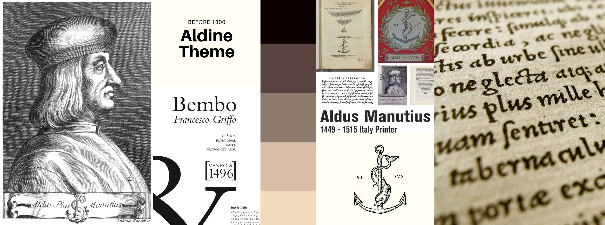
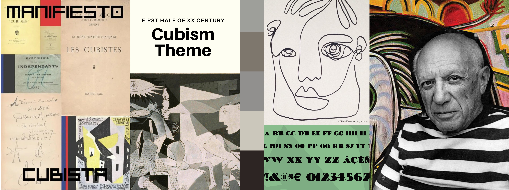

Aldo Manutius was a Venetian scholar, who became a publisher and printer when he founded the Aldine Press in 1495. His typefaces were all designed and cut by the brilliant Francesco Griffo, a punchcutter who created the first Roman type cut from study of classical Roman capitals.
The reference for our style is a typical edition by Aldine Press. The introduction of pocket editions was an extraordinary benchmark in the press history, together with the creation of roman types which are still very common in nowadays magazines and publications. The "Aldine" typeface was recreated by Monotype in 1929. In 1990, the Monotype staff digitized 24 weights of Francesco Griffo's Bembo family, which was originally created in 1496.
We chose an ancient paper image for the background and we decided to use an ornamental capital letter for the title initial. The font we chose is ‘Aldine 721’, one of the many fonts inspired by Aldine press, they all are part of the bigger Roman family (e.g. Times New Roman). The font style is classical and old fashioned.
The title font is more decorative and inspired by medieval fashion. Indeed, during the Middle Ages, copists used to decorate manuscripts by drawing miniatures. This trend remained in vogue even with the press advent in the XVI century.
Cubism is a form of art which was developed by Pablo Picasso and his close associate, Georges Braque, as a means to show the endless possibilities of inventions. Through their research they found that they could easily represent the movement and expression of a human figure and other elements through the use of common shapes, such a s with a collage. Typography was influenced in many ways through the use of Cubism, such as with its practice of integrating letterforms into paintings and design movements into type.
Cubism’s use of fragments would also assist in furthering the many different typographical movements that would begin in the many years after its development. It would also help influence the subsequent development of 20th-century design and even modern day designs, such as magazines, many different designs for companies and places alike as well as the average person’s thought process when creating a design.
We realized from scratch the background image using vector graphics. The palette is minimal. Cubist artists simplified their colour schemes to a nearly monochromatic scale (hues of tan, brown, gray, cream, green, or blue were preferred) in order not to distract the viewer from the artist's primary interest—the structure of form itself.
Our source of inspiration was one of Picasso's most famous paintings: Guernica. Both the palette we chose and the design for the background are inspired by the 1937 oil painting exhibited in the Museo Reina Sofía in Madrid.
The font for the title is called “Bric-a-Braque” from a play on the name of one of the co-founders of Cubism, Georges Braque. The font is part of the Deco Type family, where we can find many stylish alphabets of the 20’s and 30’s. Originally called Cubist Bold, the font was designed by John Zimmerman for Barnhard Brothers and Spindler, around 1929. The font we used for the rest of the text is “Quicksand”, both in bold and light versions. Quicksand is a display sans serif with rounded terminals. We chose this Google Font because it combines together readability and design purposes, using geometric shapes as a main feature.
